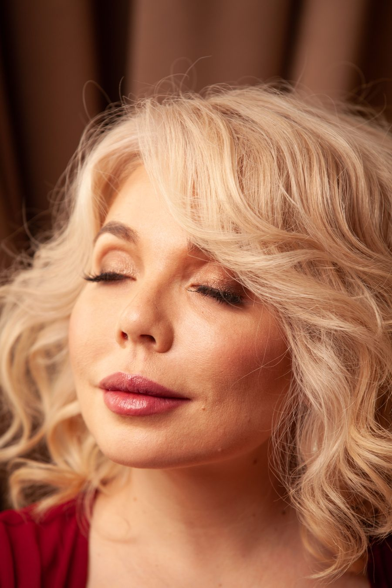

Recognized as a child prodigy in Siberia, Maria Pisarenko began piano at five, gave her first solo recital at seven, and appeared as a concerto soloist with symphony orchestras by eight. After top honors at the First International Tchaikovsky Youth Competition in Moscow, she was invited to the Central Music School of the Moscow Tchaikovsky Conservatory — the heart of the legendary Russian school of piano.
She earned degrees in Piano Performance, Pedagogy and Collaborative Piano from the Gnesins Russian Academy of Music, and a Doctor of Musical Arts from the University of Nevada, Las Vegas — alongside a Ph.D. in Linguistics.
Maria is a bearer of the golden Russian piano school — the tradition of Heinrich Neuhaus, Alexander Goldenweiser, Tatiana Nikolayeva and Maria Yudina — carried to her directly through her own teachers. Her formative teacher at the Central Music School was Manana Kandelaki — a pupil of the legendary Tatiana Nikolayeva — and during those years she studied regularly with Ilya Klyachko, a pupil of Alexander Goldenweiser. Nikolayeva, too, was Goldenweiser's student, so Maria's training descends to him along two independent lines — and Goldenweiser studied with Alexander Siloti, a pupil of Franz Liszt himself. A direct, documented teaching line: Liszt → Siloti → Goldenweiser → Klyachko & Nikolayeva → her teachers → her.
At the Gnesins Academy she studied with Dr. Lina Bulatova, Dr. Vera Nossina and professor Yuri Ponizovkin — a pupil of the legendary Maria Yudina and a noted Rachmaninoff scholar. As a student she played for Nikolayeva herself, and has worked in lessons and masterclasses with legends of the school — Eliso Virsaladze, Vera Gornostayeva, Sergei Dorensky, Lev Naumov, Vladimir Krainev — with consultations at The Juilliard School.

2nd Prize — International Piano Competition in Memory of Sviatoslav Richter, Paris · 2nd Prize — Frédéric Chopin International Competition, Rome · First International Tchaikovsky Youth Competition, Moscow.
Solo recitals and concerto appearances across Russia, Europe, Asia and the USA — including the Royal Academy of Music (London), the Paris Conservatory, the Moscow Tchaikovsky Conservatory and Santa Cecilia (Rome). Concerto soloist in Grieg, Mozart and Beethoven.
Steinway Top Teacher Award · University faculty (College of Southern Nevada, Southern Utah University) · featured on Nevada Public Radio, Reno Public Radio and Channel One Russia.
Founder of Online Piano University; her students earn top ABRSM / Royal Academy marks, win competition prizes and gain admission to leading music schools in the U.S. and abroad.
Grieg — Piano Concerto in A minor · live with orchestra
Chopin — Sonata No. 2 in B-flat minor, Op. 35
Solo Piano Recital · Southern Utah University (live)
“The Siberian-born artist has performed throughout Europe, and has won various competitions… a featured performer on Nevada Public Radio and a guest soloist with numerous orchestras.”Salt Lake Tribune
“She has performed on some of the most prestigious stages of the world, including in Russia, Asia, Europe, and the United States.”Clark County, Nevada
A complete university-level beginner course — free on YouTube — plus 1-on-1 Zoom lessons worldwide and a free Piano Starter Guide.
onlinepianouniversity.comPrivate in-person lessons in Las Vegas for children, teens and adults — in a peaceful, non-commercial studio.
lasvegaspianoschool.commaria@onlinepianouniversity.com
Las Vegas Piano School: maria@lasvegaspianoschool.com